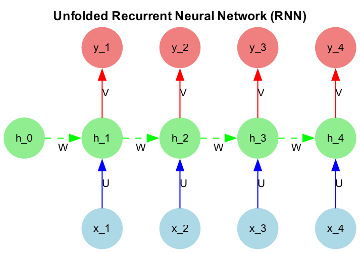

import numpy as np
import matplotlib.pyplot as plt
import torch
import torch.nn as nnVanilla Recurrent Neural Network
In this article we will go over the math of vanilla recurrent neural network (RNN) and also see how backpropagation through time (BPTT) works. We will also implement a simple RNN from scratch using torch. RNN is a type of neural network that is designed to handle sequential data. It has a hidden state that is updated at each time step and is used to store information about the sequence. The hidden state is updated using the input at the current time step and the hidden state at the previous time step. The output of RNN can be at each time step or at the end of the sequence, or both. Depending on the task, the output can be used for different purposes. Some examples of tasks that RNN can be used for are time series prediction, language modeling, and machine translation. Here we will focus on the math of Simple RNN, both forward and backward pass.
Lets set up the mathematical notation that we will use in this article. We will use the following notation:
- \(x_t\) is the input at time step \(t\)
- \(h_t\) is the hidden state at time step \(t\)
- \(y_t\) is the output at time step \(t\)
- \(U\) is the weight matrix for the input \(x_t\) to hidden state \(h_t\)
- \(W\) is the weight matrix for the hidden state \(h_{t-1}\) to hidden state \(h_t\)
- \(V\) is the weight matrix for the hidden state \(h_t\) to output \(y_t\)
- \(b_h\) is the bias for the hidden state \(h_t\)
Forward Pass
In a typical RNN, we use tanh as the activation function in the hidden state and softmax (given a classification problem) as the activation function in the output layer. The equations for the forward pass are as follows:
\[ h_t = \tanh(U x_t + W h_{t-1} + b_h) \]
\[ y_t = \text{softmax}(Vh_t) \]
Note: U, W, V, and b_h are the parameters of the RNN that are learned during training and the same matrices are used at each time step. Its important to visualise the architecture of RNN in an unfolded manner to understand how the hidden state is updated at each time step. The figure below shows the unfolded RNN for a sequence of length 4.
Code
import graphviz
from IPython.display import Image
# Create a directed graph
dot = graphviz.Digraph(format='png')
dot.attr(rankdir='BT') # Set direction from Bottom to Top
dot.attr(size='8,12') # Adjust size of the graph
dot.attr(dpi='150') # Increase resolution
# Time steps
timesteps = 5
# Node styles
node_style = {
'shape': 'circle',
'style': 'filled',
'fontname': 'Arial',
'fontsize': '10'
}
# Create input layer (starting from x_1, skipping x_0)
with dot.subgraph() as s:
s.attr(rank='same')
for t in range(1, timesteps): # Start input from x_1, not x_0
s.node(f'X{t}', f'x_{t}', **node_style, color='lightblue')
# Create hidden layer (starting from h_0)
with dot.subgraph() as s:
s.attr(rank='same')
for t in range(timesteps):
s.node(f'H{t}', f'h_{t}', **node_style, color='lightgreen')
# Create output layer (starting from y_1, not y_0)
with dot.subgraph() as s:
s.attr(rank='same')
for t in range(1, timesteps): # Outputs start from y_1
s.node(f'Y{t}', f'y_{t}', **node_style, color='lightcoral')
# Add edges for connections between layers
edge_style = {'fontname': 'Arial', 'fontsize': '10', 'len': '1.5'}
for t in range(1, timesteps): # Start connections from x_1 (no x_0)
# Input to hidden connections (U)
dot.edge(f'X{t}', f'H{t}', label='U', color='blue', **edge_style)
# Hidden to output connections (V)
dot.edge(f'H{t}', f'Y{t}', label='V', color='red', **edge_style)
# Recurrent connections between hidden states (W)
for t in range(1, timesteps):
dot.edge(f'H{t-1}', f'H{t}', label='W', color='green', style='dashed', **edge_style)
# Add a title
dot.attr(label='Unfolded Recurrent Neural Network (RNN)', labelloc='t', labeljust='c', fontsize='12', fontname='Arial Bold')
# Render the graph to a file
dot.render('improved_rnn_unfolded_1', format='png', cleanup=True)
# Display the image inside the notebook
Image(filename='improved_rnn_unfolded_1.png')

Forward equations over time
We instantiate the hidden state \(h_0\) to be zero at the start of the sequence. The forward equations for the RNN over time are as follows:
\[ \begin{aligned} for \ t &= 1, 2, 3, 4 \\ z_t &= U x_t + W h_{t-1} + b_h \\ h_t &= \tanh(z_t) \\ Y_t &= \text{softmax}(Vh_{t} + b_y) \end{aligned} \]
Backward Pass
For ease of comprehension, we will start with the many to one RNN architecture. It means we have one output at the end of the sequence. The loss function that we will use is the cross-entropy loss. The cross-entropy loss in that case is given by:
\[ L = -\sum_{c=1}^{C} y_c \log(\hat{y}_c) \]
where \(y_c\) is the true label and \(\hat{y}_c\) is the predicted output from the softmax. The loss function is a function of the output at the last time step \(y_T\). The goal of the backward pass is to compute the gradients of the loss function with respect to the parameters of the RNN. The gradients are then used to update the parameters of the RNN using gradient descent. Note the gradient of Loss wrt input to softmax is given by:
\[ \frac{\partial L}{\partial a_T} = \hat{y} - y \]
import torch
import torch.nn as nn
## Lets create some data points
# Number of samples = 2
# lets have time steps = 4
n_samples = 5
n_timesteps = 4
num_features_in = 3
num_features_out = 2
# Create a random input tensor
X = torch.randn(n_samples, n_timesteps, num_features_in)
Y = torch.randn(n_samples, n_timesteps, num_features_out)
# Lets instantiate U, V, W and the biases. Hidden state is initialized to zero
hidden_state_len = 4
hidden_state_0 = torch.zeros(n_samples, hidden_state_len)
U = nn.Linear(num_features_in, hidden_state_len, bias=False)
V = nn.Linear(hidden_state_len, num_features_out)
W = nn.Linear(hidden_state_len, hidden_state_len, bias=True)
# # Lets compute the output
# outputs = []
# hidden_state = hidden_state_0
# for t in range(n_timesteps):
# hidden_state = torch.tanh(U(X[:, t, :]) + W(hidden_state))
# outputs.append(V(hidden_state))##X[1]
## lets process the first sample first
x = X[1]
for t in range(x.shape[0]):
print(f"Time step {t}")
print(f"X_{t} = {x[t]}")Time step 0
X_0 = tensor([ 0.3112, 0.4744, -1.0944])
Time step 1
X_1 = tensor([-0.2352, -0.4401, 0.2961])
Time step 2
X_2 = tensor([ 0.6156, -0.2568, 0.7193])
Time step 3
X_3 = tensor([1.0839, 0.6316, 0.6759])4